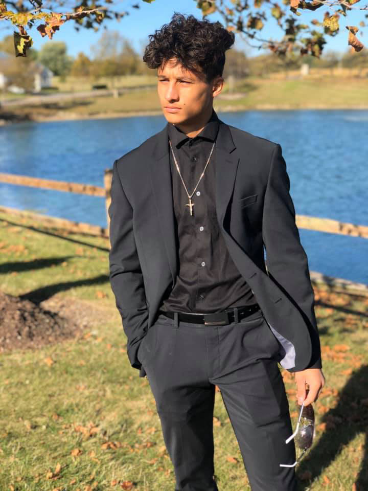

Mother's Side
- Lea Barrera(Mother)
- Malik Boaz Branson( Half Brother, Father Figure)

- Jessica Jo Barrera(Grandmother)
- Ole Gario Barrera III (Grandfather)
- Ole Bryce Barrera IV (Uncle)
- Frank(Dog)
- Jole Barrera(Aunt)
- Reese Copenhaver(Twin/First Cousin)
- Ricky Copenhaver(Twin/First Cousin)
- Sloan Manino (Half Sister to the Twins/First Cousin)
Father's Side
- Amanda Price(Step Mother)
- Landon Price( Half Brother)
- Jameson Price( Half Brother)
- Cohen Price( Half Brother)
- Jeremy Price(Father)
- Jordan Price( Half Brother)
- Joel Price( Half Brother, Father Figure)
- Isaac Price( Half Brother)
- Isabelle Price( Half Sister)
- Sandra Willis(Grandmother)
- Mike Willis(Grandfather)
- Jerry Price (Grandfather)
- Joshua Price (Uncle)
- Stacie Price (Cousin)
- Jace Price (Little Cousin)
Hobbies
Some hobbies that I enjoy are.
Video Games
I enjoy Video games as they let me explore different worlds that only really exist in our imaginations. Video games always help me take my mind off of reality and they let me relax. I always enjoy myself most while playing video games when im playing with my friends as playing with people you know adds a whole nother experience to playing video games.
Swimming
Swimming always helps me relax and get in a fun exercise. There are so many different things you can do while swimming that its hard to get bored as easily as most other activties . Its easy to get bored if your alone though its alway best when swimming to be hanging out with other poeple as they add to the fun and make the over all experience way better and more enjoyable.
Biking
Biking has always been fun for me even if I'm with other poeple or not. Biking always helps me take my mind off of whats going on around me and just really help me destress and forgot about my current problems for a little while.
Running
Ive always enjoyed running ever since I was young my only problem was I had asthma at a young age so it inflicted me very heavily and I could never run as much as i wanted to. As I grew up I started growing out of my asthma and I slowly started to be able to run more and more as tiring as it is its still really enjoyoyable.
Weight Lifting
I've never been the strongest and I always felt a little weaker then most poeple so when I started working out it gave me a feeling of accomplishment and made me feel better about myself. Working out lets me take out my anger and frustrations and overall help me calm down and get away from my stress. Its a way for me to let out my more malicicious feelings towards others.
Hanging Out With friends
I love to hangout with my friends whenever we have free time. Either we are staying at each others house's for the weeked or just driving around town messing around we always have a good time.
Jaidon's Weekly Schedule
| Monday |
Tuesday |
Wednesday |
Thursday |
Friday |
Saturday |
Sunday |
| Morning Bus Ride 7:30/7:40-7:55 |
Lounge Around 12:00 A.M.-12:00 A.M. |
Lounge Around 12:00 A.M.-12:00 A.M. |
| Morning Transfer Ride 8:00/8:10-8:30/8:36 |
| Sit In HomeRoom 8:36-9:00 |
| Jr Lab Database 9:00-11:38 |
Jr Lab Java 9:00-11:38 |
Jr Lab Web Design9:00-11:38 |
Jr Lab Lab Day9:00-11:38 |
| Algebra 1 11:42-12:22 |
| Lunch 12:26-12:48 |
| Human Growth 12:52-1:32 |
| Physics 1:36-2:16 |
| English 11 2:20-3:00 |
| Bus Ride/Ride Home 3:03-3:40/3:50 |
| Feed/Water Dog 4:00-4:30 |
| Lounge Around 4:30-9:00 |
| Eat Dinner Late 9:00-12:00 |
| Lounge Around 12:00-2:00 A.M. |
| Sleep 2:00 A.M.- 6:30/7:00 A.M. |